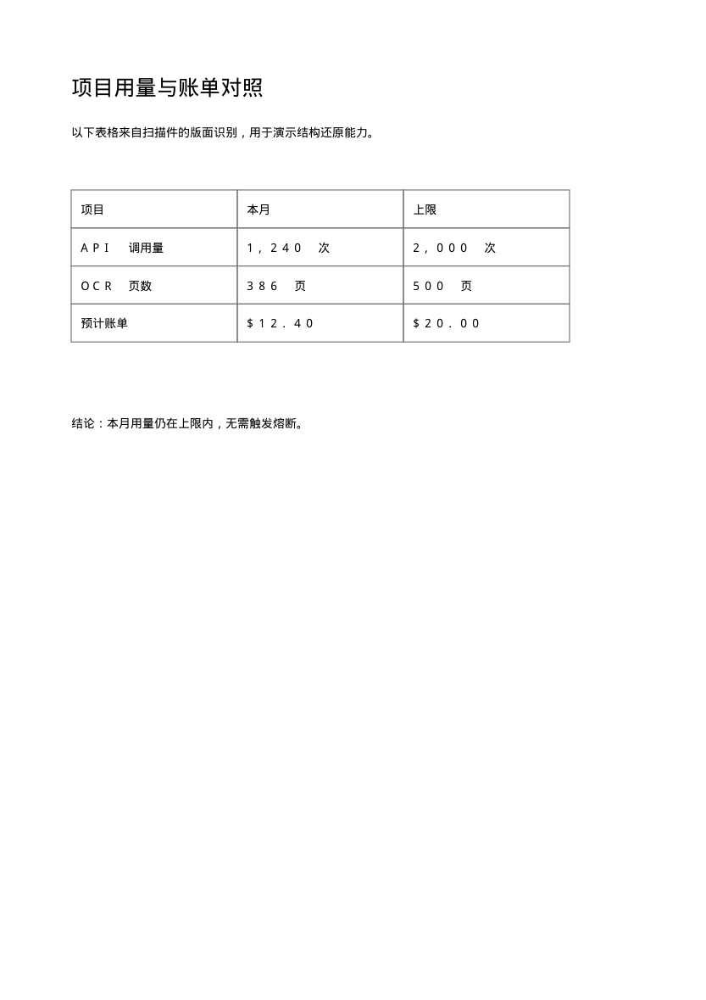

KNOWLEDGE-OS · 真实案例与交付物
这些不是演示用的假场景：每条都对应一条真实规则，规则来自团队踩过的坑。
勾选你正在用的技术栈，立刻看到这套知识库会替你盯住哪些规则。内容来自 27 条真实编译规则。

输出：可直接粘进 Obsidian / Notion
按 REQ-001-B 逐词核验前排结果是否为交互式工具落地页，下面是占比。
4 个词全部通过规则判定，但前排普遍免费、免注册、浏览器本地处理——通用赛道已经饱和。真正的机会在中文扫描技术文档的表格与公式保真。
规则版本 ；每次提交重新核验文档与产物是否一致。
三条命令完成编译、全链路校验与产品仓扫描。
python Knowledge-OS/tools/compile_rules.py python Knowledge-OS/tools/verify_all.py --with-pipeline python Knowledge-OS/tools/verify_rules.py --product <你的产品目录>